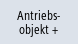
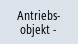

Zustandsanzeige
Im Fenster "Antriebssystem Diagnose" erhalten Sie Statusinformationen über die Antriebsgeräte und der zugehörigen Antriebsobjekte. Die Statussymbole haben folgende Bedeutung:
Anzeigesymbol | | Bedeutung |
|---|
 | Grün | Das Antriebsobjekt ist im (zyklischen) Betrieb, ohne jegliches erkennbares Problem. |
 | Gelb | Das Antriebsobjekt hat ein weniger schwerwiegendes Problem erkannt, d.h. es steht zum Beispiel eine Warnung an oder fehlen Freigaben. |
 | Rot | Dieses Antriebsobjekt hat ein schwerwiegendes Problem erkannt, es steht zum Beispiel ein Alarm an. |
 | Grau | Für dieses Antriebsobjekt konnte der Antriebszustand nicht ermittelt werden. |
# | Sonderzeichen | Fehler beim Lesen der Daten. |
Vorgehensweise
 | 1. | Wählen Sie den Bedienbereich "Diagnose" an. |
 | 2. | Drücken Sie die Menüfortschalt-Taste und den Softkey "Antriebssystem". |
 | 3. | Das Fenster "Antriebssystem Diagnose" wird geöffnet. In der Fensterüberschrift wird der Name des angewählten Antriebsgerätes angegeben. |
|   | | Drücken Sie den Softkey "Antriebsobjekt +", bzw. "Antriebsobjekt -". Das nächsten (+) bzw. vorherigen (-) Antriebsobjekts wird selektiert.. |
| | | - ODER - |
| | | Drücken Sie den Softkey "Antr.ger. auswählen". Das Fenster "Antriebsgerät anwählen" wird geöffnet. |
| | 4. | Wählen Sie über die Auswahlliste das gewünschte Antriebsgerät aus und drücken Sie den Softkey "OK", um die Auswahl zu bestätigen. |